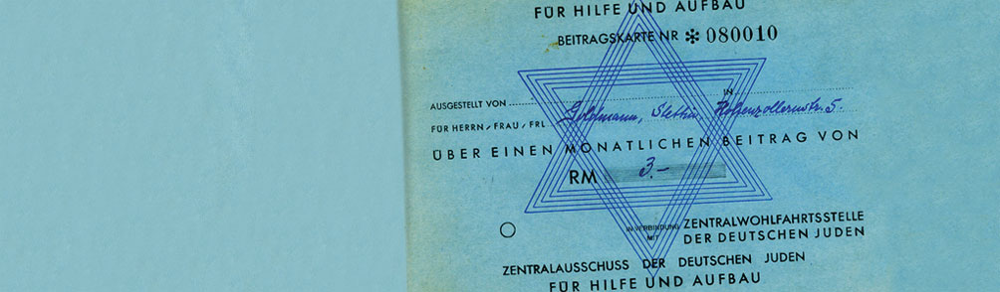

Who We Are
The Blue Card was founded to respond to urgent need.
Since its earliest beginnings in Germany in 1934, and its reestablishment in the United States in 1939, the organization has remained focused on helping victims of Nazi persecution rebuild their lives and access essential support.
Our Mission Continues
Today, The Blue Card provides direct financial assistance and meaningful resources that strengthen the mental, emotional, and physical well-being of Holocaust survivors living in need across the United States.
Our Beginnings
Antisemitism intensified in the years before World War II. Jewish families faced growing discrimination across daily life, including employment, commerce, and access to opportunity. In 1934, The Blue Card was established by the Jewish community in Germany to help those already suffering under Nazi restrictions, business closures, and forced loss of livelihood.
In 1939, the organization was reestablished in the United States to continue aiding refugees of Nazi persecution as they sought safety and a new beginning in America.
How The Blue Card Got Its Name
The organization’s name comes from the original blue paper cards issued to donors who contributed funds for individuals harmed by rising antisemitism before the war. Each contribution was marked with a stamp on the card, creating a visible record of generosity and shared responsibility.
After the Holocaust, The Blue Card’s mission expanded to help survivors of the Shoah establish stable new lives in the United States. Since its inception, The Blue Card has remained committed to improving daily life for survivors and helping create a more secure future.
Our Mission Continues
Today, The Blue Card provides direct financial assistance and meaningful resources that strengthen the mental, emotional, and physical well-being of Holocaust survivors living in need across the United States.
Our Partners
The Blue Card’s work is strengthened by a trusted network of philanthropic and community supporters.